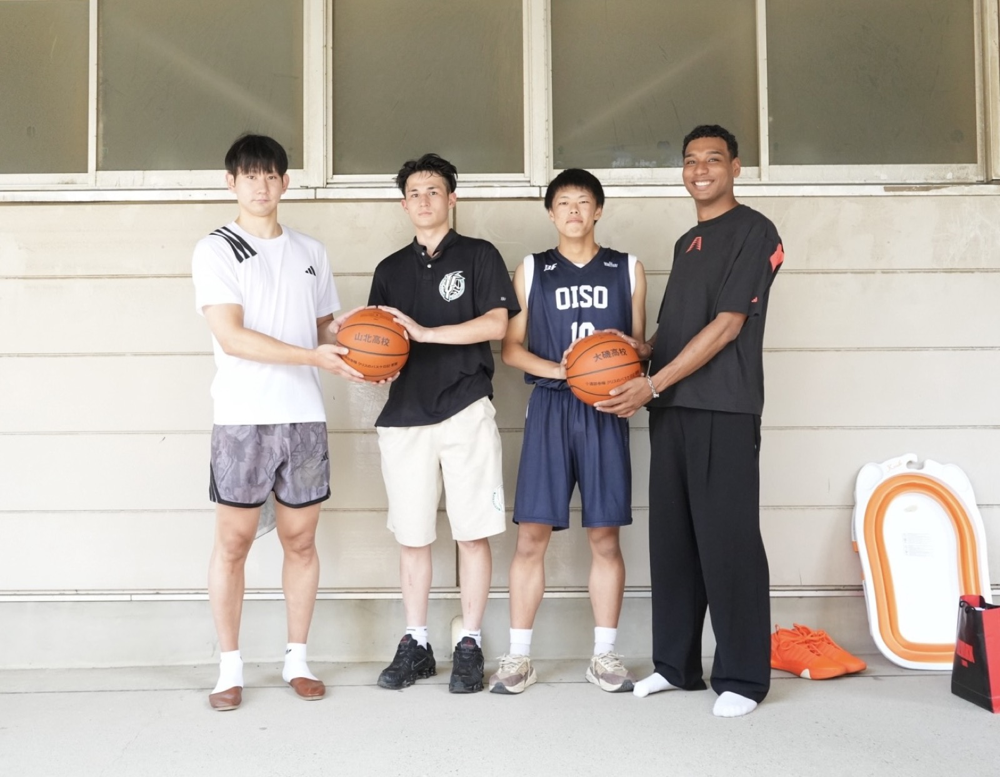
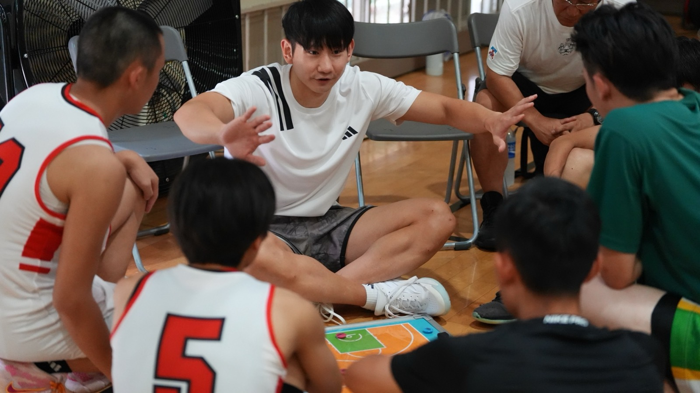
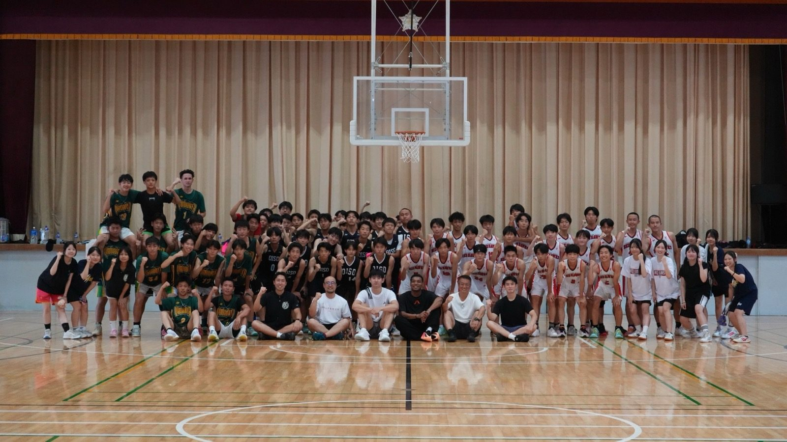
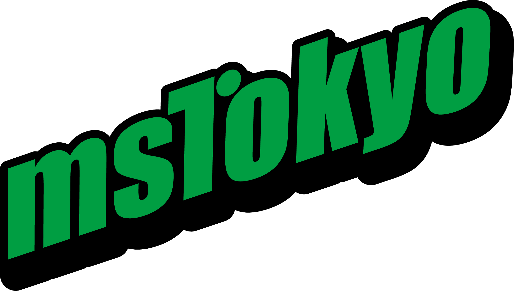

恩師のもとへ、ふたたび —— 小酒部泰暉と、クリスのバスケ日記、2回目の40球を寄贈
2026年7月24日、神奈川県立大磯高校の体育館。B.LEAGUE・アルバルク東京の小酒部泰暉と、バスケ動画クリエイター「クリスのバスケ日記」のクリスが、校名入りのバスケットボール計40球を高校生たちに届けた。2024年8月の初回に続く、2回目のボール寄贈だ。

会場は、恩師の赴任先
2人は神奈川県立山北高校の同級生。会場となった大磯高校は、高校時代に2人を指導した渡邊新一先生が現在赴任している学校だ。そこに母校・山北高校のバスケットボール部も招き、両校へ20球ずつ、計40球を贈った。寄贈ボールには前回と同じく、「大磯高校」「山北高校」それぞれの校名が入る。
高校の部活動では、備品が足りない分を顧問の先生が自腹で補うことが珍しくない。寄贈で浮いた予算を、先生方にはもっと子どもたちのために使ってほしい。そして「あの時、あの子たちを指導してよかった」と思ってもらいたい——初回から変わらない、この企画の芯だ。
寄贈式から、クリニック、そしてゲームへ
当日は9時からの寄贈式にはじまり、小酒部による約1時間のバスケットボールクリニック、そして両校生徒によるゲームまで、3時間のプログラム。県大会2回戦止まりの無名選手からBリーガーになった男の直接指導が、同じ神奈川の高校生に届く時間だ。

高校2年生でバスケを始めたクリエイターと、県大会2回戦止まりだったプロ。2人の原点であるこの企画は、一度きりでは終わらなかった。2年ぶりに、同じ想いが同じ体育館サイズの熱で繰り返された。
続けることが、恩返しになる
1回目が「はじめての恩返し」なら、2回目は「続ける」という意思表示だ。この日の様子は記録映像として撮影されており、YouTube「クリスのバスケ日記」・SNSで公開予定。本開催には協賛としてMS TOKYOが名を連ねた。

